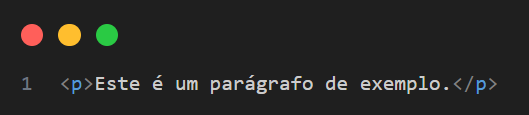
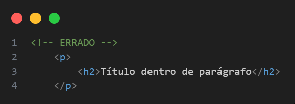

Tag <p> — Parágrafos em HTML5
A tag <p> é usada para definir parágrafos de texto em HTML. Ela é essencial para estruturar blocos de conteúdo textual e aparece com frequência em praticamente qualquer página da web.
Sintaxe básica

O que faz a tag <p>?
- Define um bloco de texto como um parágrafo.
- Adiciona espaçamento automático antes e depois do parágrafo (comportamento padrão dos navegadores).
- Melhora a legibilidade, estrutura e semântica do conteúdo.
Conteúdo permitido dentro de <p></p>
A tag <p> aceita apenas conteúdo de nível inline, como:
- Texto simples
-
Links (
<a>) -
Negrito (
<strong>) -
Itálico (
<em>) -
Quebra de linha (
<br>) -
Imagens inline (
<img>) -
<span>para formatação genérica
Não é permitido colocar elementos de bloco como <div>, <h1> a <h6>, <ul>, <table>, etc., dentro de uma tag <p>.
Erro comum
Acessibilidade e SEO
-
A tag
<p>contribui para a leitura por leitores de tela, o que melhora a acessibilidade. - Ajuda mecanismos de busca a entenderem melhor a estrutura do conteúdo, favorecendo o SEO.
Quando usar a tag <p>
Use sempre que quiser separar blocos de texto em pensamentos distintos, parágrafos informativos ou descrições. É uma das bases para um conteúdo bem estruturado.